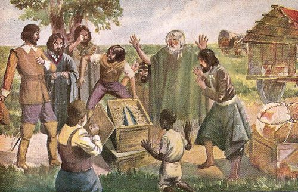
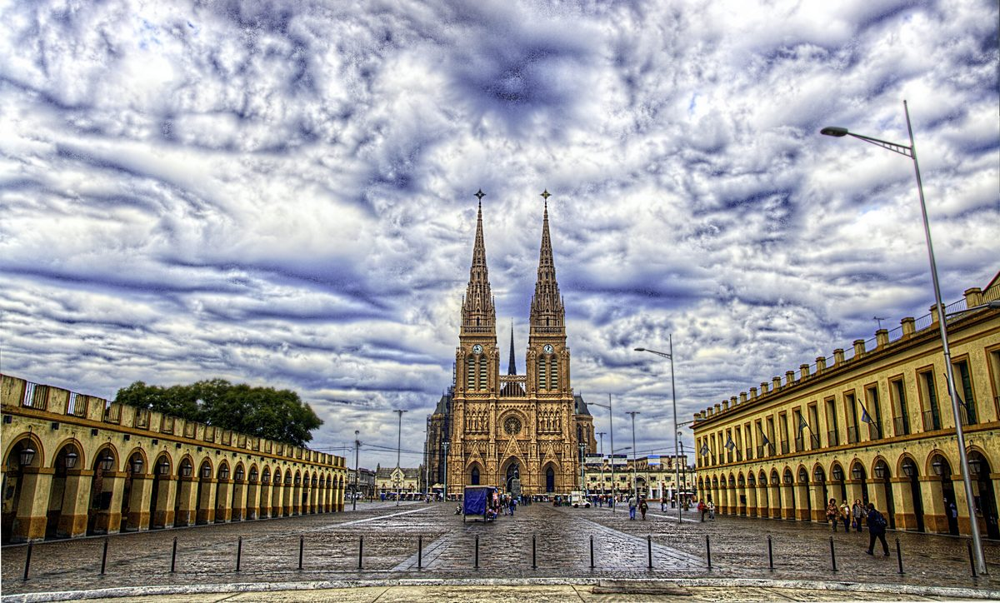
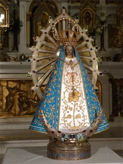

La Historia de la Imagen Milagrosa

En el año 1630, en los vastos territorios del Virreinato del Río de la Plata, un hacendado portugués llamado don Antonio Farías de Saa encargó desde Brasil una imagen de la Inmaculada Concepción para su estancia en la región de Sumampa, en el actual territorio de Santiago del Estero. La imagen, modelada en terracota por artesanos brasileños, fue enviada en barco hasta Buenos Aires junto con otras dos efigies marianas de menor tamaño. Desde Buenos Aires, las imágenes fueron cargadas en una carreta tirada por bueyes que debía recorrer las centenares de leguas de camino hacia el norte. La carreta hizo una parada en la estancia del capitán don Pedro de Luján, situada a orillas del río que hoy lleva ese nombre, en el corazón de la pampa bonaerense.
A la mañana siguiente, cuando los boyeros intentaron reanudar la marcha, los bueyes se negaron a continuar. Por más que los arrearon y fustigaron, los animales permanecieron inmóviles como si una fuerza invisible los retuviera en ese lugar. Se probó con otras yuntas, se aligero la carga, se buscaron toda clase de explicaciones prácticas, pero ninguna funcionó. Fue entonces cuando alguien tuvo la idea de descargar la pequeña imagen de la Inmaculada Concepción —la más menuda de las tres que viajaban en la carreta— y al hacerlo los bueyes comenzaron a caminar sin dificultad. La interpretación fue unánime entre los presentes: la Virgen quería permanecer en ese lugar. La imagen fue dejada en la estancia del capitán Luján, y el hecho fue considerado un signo providencial de elección divina.
Este episodio, aparentemente sencillo, constituye el fundamento histórico y espiritual de toda la devoción lujanense. La Virgen no esperó a que los hombres le construyeran un templo y le buscaran un lugar de honor: fue ella quien eligió su morada con una señal inequívoca, imponiendo su voluntad sobre la de los hombres con la misma suavidad y firmeza con que una madre reclama el derecho a estar junto a sus hijos. Esta iniciativa materna es la clave hermenéutica con la que la tradición argentina ha leído siempre el origen de la devoción a la Virgen de Luján.
El Milagro de la Detención
Los detalles del prodigio de la detención de la carreta han sido transmitidos con notable consistencia por las distintas fuentes documentales que los historiadores han podido reconstruir. Según las versiones más detalladas, los intentos por mover el vehículo se prolongaron durante horas, ante la perplejidad creciente de los viajeros y de los peones de la estancia que acudieron a ayudar. Se probó con bueyes más fuertes y con mulas, pero ningún animal consiguió arrastrar la carreta. Algunos testigos refirieron que los animales no solo se detenían sino que retroced ían como si enfrentaran una resistencia invisible.
Cuando por fin se tomó la decisión de descargar las imágenes una a una para aligerar el peso, los bueyes originales respondieron de inmediato al ser retirada la caja que contenía la pequeña imagen de terracota. Volvieron a detenerse cuando la caja fue reembarcada, y cedieron nuevamente al retirarla por segunda vez. La prueba fue repetida varias veces ante distintos testigos, con resultado idéntico, lo que descartó para los presentes cualquier explicación accidental o mecánica. La imagen quedó en la estancia, encomendada al cuidado de un esclavo negro llamado Manuel, hombre de profunda piedad que se convirtió en su primer guardián y devoto y cuya fidelidad a la Virgen forma parte indisociable de la historia espiritual de Luján.
Con los años, la fama del prodigio se extendió por toda la región y comenzaron a llegar peregrinos de lugares cada vez más lejanos. El pueblo que creció en torno al primitivo oratorio recibió el nombre de Luján en honor al capitán dueño de las tierras donde todo había ocurrido, y su iglesia se convirtió en el punto de convergencia espiritual de las poblaciones del extenso territorio rioplatense.
La Basílica Neo-Gótica

La grandiosidad del templo que hoy se alza en Luján es en sí misma un testimonio del fervor popular que durante siglos ha nutrido la devoción a la Virgen. La basílica actual, declarada Monumento Histórico Nacional de Argentina, fue construida entre 1887 y 1937 según el proyecto del sacerdote e ingeniero lazarista Jorge María Salvaire, quien encomendó su diseño al arquitecto uruguayo Ulderico Courtois. El estilo elegido fue el neogótico francés, en homenaje a las grandes catedrales medievales de Francia, especialmente la de Chartres, cuya devoción mariana fue para Salvaire un modelo inspirador.
El resultado es una obra de excepcional belleza y escala: la basílica mide 105 metros de largo y sus dos torres alcanzan los 98 metros de altura, convirtiéndose en uno de los edificios religiosos más imponentes de América del Sur. La fachada principal, orientada hacia la plaza central de Luján, presenta tres portales con tímpanos esculpidos, arcos ojivales y una rica ornamentación de influencia gótica que contrasta con la horizontalidad del paisaje pampeano que la rodea. El interior, iluminado por vitrales de colores que narran episodios de la historia sagrada y de la historia argentina, alberga la imagen original de la Virgen en el altar mayor, custodiada detrás de un elaborado retablo.
Las criptas de la basílica conservan documentos, objetos y ex-votos ofrecidos a la Virgen a lo largo de los siglos, constituyendo un archivo vivo de la historia religiosa argentina. Entre los objetos más llamativos se encuentran cadenas, grilletes y herramientas de trabajo ofrecidos por personas que consideraron haber sido liberadas de situaciones de esclavitud o de peligro gracias a la intercesión de la Virgen de Luján.
Arte e Iconografía

La imagen original de Nuestra Señora de Luján es una pequeña figura de terracota de aproximadamente 38 centímetros de altura, modelada en Brasil en el primer tercio del siglo XVII siguiendo la iconografía de la Inmaculada Concepción: María de pie, con las manos unidas en oración, pisando la luna creciente y rodeada de rayos de luz. El rostro expresa una suavidad juvenil característica del arte barroco luso-brasileño de esa época, y los rasgos delicados contrastan con el tamaño modesto de la imagen, que resulta sorprendente considerando la enormidad del culto que ha generado.
Como ocurre en tantos grandes santuarios marianos, la imagen original no se expone desnuda sino vestida con ricos mantos confeccionados por bordadoras devotas. El ajuar de la Virgen de Luján incluye decenas de vestiduras bordadas en oro, plata e hilos de seda, muchas de ellas donaciones de presidentes argentinos, personalidades públicas y comunidades de fieles. La corona de oro, incrustada de piedras preciosas, fue obsequiada por el pueblo argentino en distintas etapas de la historia. En determinadas fechas especiales se expone la imagen con sus vestiduras más solemnes, mientras que en el uso litúrgico ordinario se emplea una vestimenta más sencilla que destaca la pureza de los rasgos originales de la terracota.
Las Peregrinaciones
Luján es uno de los destinos de peregrinación más importantes del hemisferio sur. Cada año, más de siete millones de personas visitan el santuario, con una concentración especialmente llamativa durante la primera semana de octubre, cuando tiene lugar la Gran Peregrinación Juvenil a Luján, una de las mayores concentraciones religiosas de América Latina. En este acontecimiento, organizado originalmente por la Juventud Obrera Católica en 1975, cientos de miles de jóvenes —la cifra ha llegado a superar el millón en algunas ediciones— realizan a pie el trayecto de 68 kilómetros que separa el barrio porteño de Liniers, en Buenos Aires, de la Basílica de Luján, caminando durante toda la noche del sábado para llegar a la mañana del domingo.
La imagen del joven caminante que avanza en la oscuridad de la noche pampeana hacia las torres iluminadas de la basílica se ha convertido en un símbolo de la fe argentina que trasciende las fronteras del país. La peregrinación no distingue de clases sociales, ideologías políticas ni edades: junto al joven universitario camina el obrero de fábrica, el empleado de oficina y el anciano que cumple una promesa de décadas. Este carácter popular e integrador de la devoción a la Virgen de Luján es quizás su rasgo más característico y el que mejor explica por qué su figura preside, desde la catedral hasta la humilde capilla de barrio, el paisaje religioso de toda la Argentina.
A la peregrinación juvenil de octubre se suman durante el resto del año las romerías de comunidades específicas: la peregrinación de los afrodescendientes, que tiene raíces en la figura del esclavo Manuel guardián de la primera imagen; la peregrinación polaca, la italiana, la boliviana y la de decenas de otras comunidades inmigrantes que han hecho de Luján el lugar donde depositar su fe y su nostalgia. Esta confluencia de naciones y culturas en torno a la imagen de una pequeña Virgen de terracota es la realización perfecta de aquella promesa implícita que la tradición ve en el gesto de detener una carreta en la pampa: la Virgen de Luján quiso quedarse precisamente allí donde todos los caminos del Cono Sur pudieran converger hacia ella.